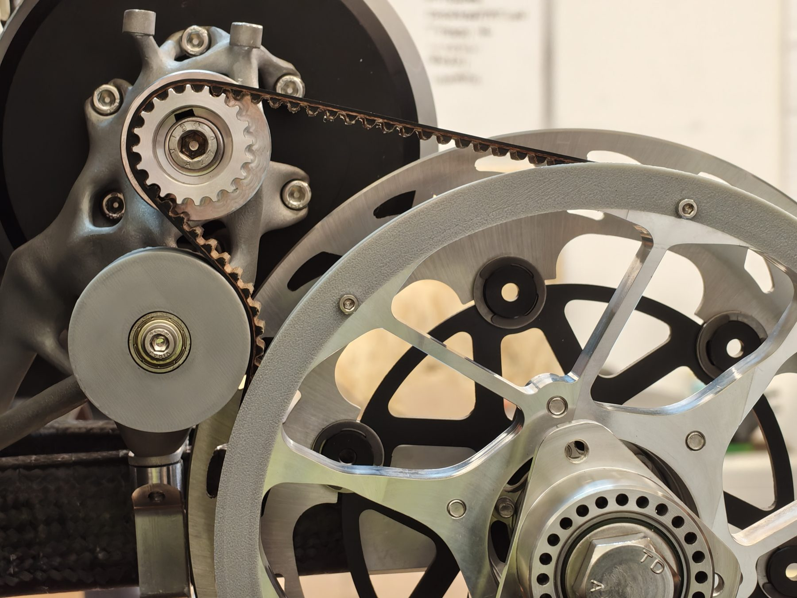
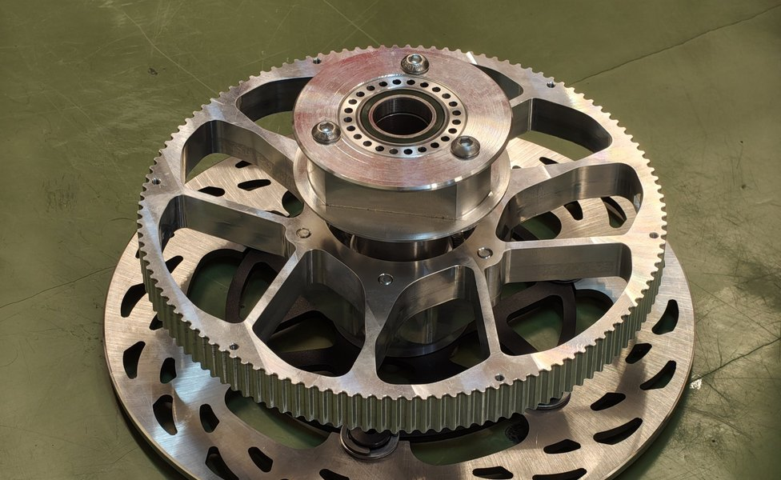

PYRFOROS IV / Drivetrain · Prometheus Eco Racing (NTUA)
Motor & Drivetrain — Mechanical Design.
The mechanical side of PYRFOROS IV's in-house drive motor and the 6:1 belt drivetrain around it — an architecture sized by lap simulation that cut a reported 20 kg from powertrain mass against the prior generation's direct axle drive.

FIG. 01 — PYRFOROS IV drive motor & belt drivetrain
Architecture & sizing
PYRFOROS III drove its axle directly; PYRFOROS IV introduced a 6:1 belt reduction between the motor and the axle. The ratio wasn't guessed — it was selected by overlaying the motor's efficiency map onto the lap-simulation velocity profile for the Poland circuit, so the motor operates at or near its peak-efficiency point for the majority of the lap.
Running the motor at its best operating point meant a smaller motor could do the job, and that decision cascaded: a reported 20 kg came out of powertrain mass against the previous platform; the two totals’ component boundaries are not published here. The motor itself is a team design — the electrical group carried the electromagnetic design, power electronics, and controller firmware, while I designed the motor’s mechanical integration and the drivetrain layout around it. Transmission force calculations were carried out by a teammate.
The lap simulation bears this out directly: across a full 191-second simulated lap, 38% of the sampled operating points fall in the 1,600–1,700 rpm and 0–0.5 N·m bin — almost exactly the 1,620 RPM the 6:1 ratio produces from the car's calculated 270 rpm wheel speed at cruise. The burst-and-coast pattern in the heatmap below (throttle in short bursts, then coast) is the team's Eco-marathon driving strategy showing up directly in the motor's operating data.
View top operating points as a table
| RPM | Torque [Nm] | Time [s] | % of lap |
|---|---|---|---|
| 1600–1700 | 0–0.5 | 73.0 | 38.0% |
| 1200–1300 | 0–0.5 | 16.3 | 8.5% |
| 1800–1900 | 0–0.5 | 15.1 | 7.9% |
| 1700–1800 | 0–0.5 | 14.4 | 7.5% |
| 1600–1700 | 0.5–1 | 10.5 | 5.5% |
| 800–900 | 0–0.5 | 8.4 | 4.4% |
| 700–800 | 0–0.5 | 7.4 | 3.9% |
| 900–1000 | 0–0.5 | 7.2 | 3.7% |
Mechanical design & serviceability

I carried the motor's mechanical design and the drivetrain layout that packages it into the car — 18 tracked part numbers at 4.80 kg for the drivetrain subsystem, under the same configuration-controlled BOM as the rest of the vehicle. The motor itself is 4,000 g; the generatively-designed bracket carrying it is 3D printed aluminium with machined mounting faces, at 181 g — the printer builds the organic load-carrying lattice, and the surfaces that actually have to fit are machined afterward.
Splitting the part that way is a rule carried over from a different team and a different car: a printed 316L mount at TUCer arrived 12.7× outside tolerance because it was released as geometry with no tolerances, datums or machining stock. Nothing of that part is in this one; the specification practice it produced is.
The rotor mounts to its shaft with an interference (shrink) fit rather than a keyway or spline — sized to carry up to 36.3 Nm through a 15.4 MPa contact pressure, assembled with a calculated thermal differential rather than a press. It's a cleaner load path for a rotating assembly at these torques, with no stress-raising keyway slot cut into the shaft.
Serviceability was a design input, not an afterthought: the belt drive is fully accessible and replaceable without any structural disassembly, so routine drivetrain maintenance and belt renewal between competition attempts never touch the monocoque.